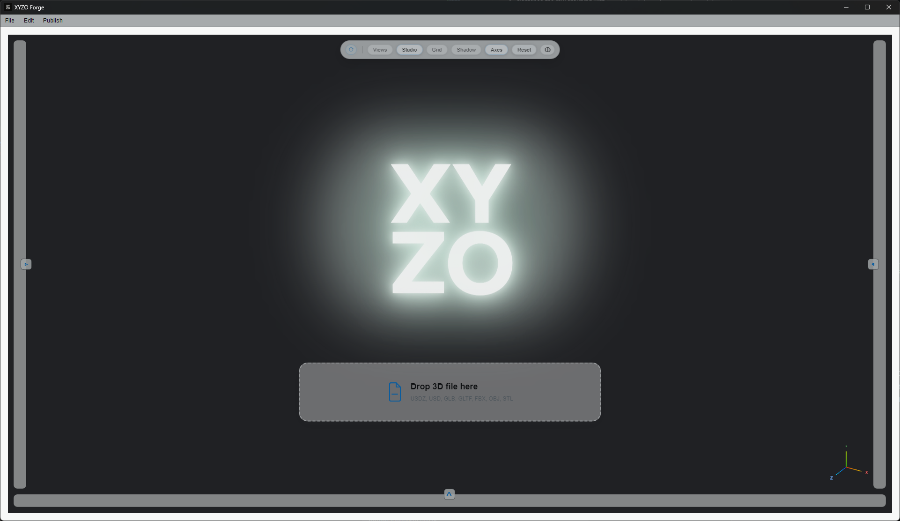

01 — NORMALIZE
WORKING TODAY
Normalize
Prepare predictable compositional structure from messy source inputs.

PACKAGE ROOT
Basketball.xyzo
- source/ traceable input evidence
- content/ canonical asset content
- Basketball.usdc authoritative stage file
- Basketball.xyzo manifest and project record
CANONICAL CONTENT
content/
- textures/ trusted texture sources
- artifacts/ derived and support outputs
- basketball_look.usda look and material layer
- render_payload.usda viewer-facing render payload
- xyzoscene.json canonical scene record
- xyzosession.json runtime and support session record
Source intake
Supported source files enter one predictable normalization path before compositional structure is created.